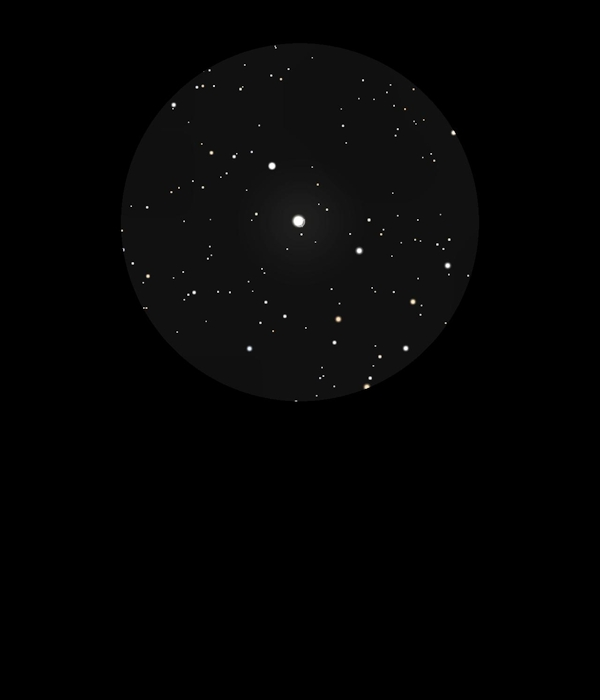

Gamma Delphini
Double Star in Delphinus
y2 Del and y1 Del, 12 Del, HIP 102532 and HIP 102531
Mags 4.25 and 5.10
24/08/16
A really beautiful double on the nose of the Dolphin!
The A star is Mag 4.25 and has a hint of yellow gold, the B
star has a nice close but easy separation, is at Mag 5.10 and
appears just yellow of white
y1 Del, 12 Del has a different HIP number, 102531
y Del, 12 Del is Gamma Delphini and according to Wikipedia are
separated by 10 arc seconds
25/08/16
Viewed again tonight for the second night running
Sharp and clear, distinct but subtle colour differences
between the two stars which sit in a very nice FOV which in
12mm include OR Del, HIP 102490 A and B at Mags 7.45 and 8.25
and HIP 102611 at Mag 7.60